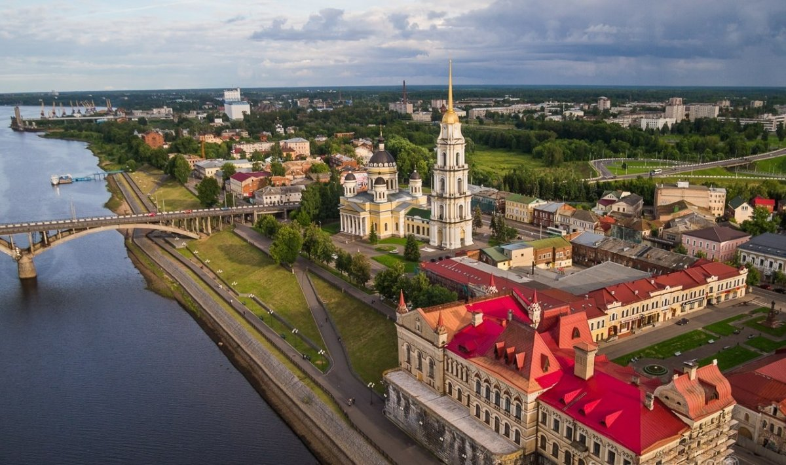
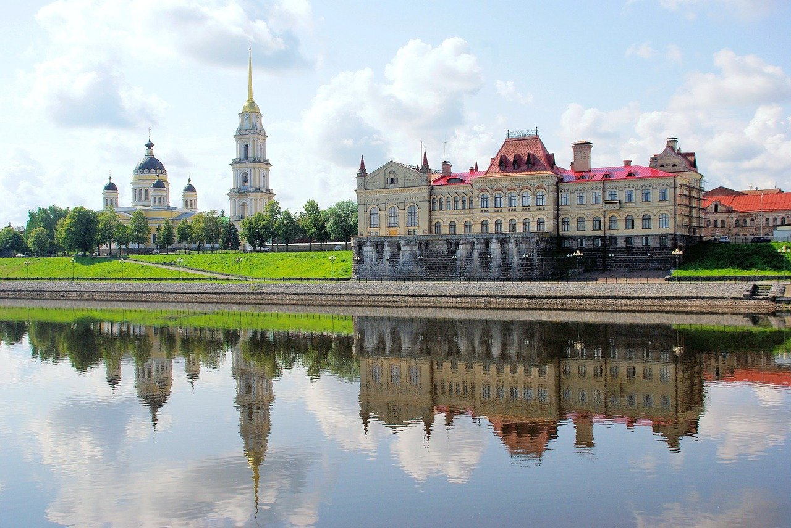
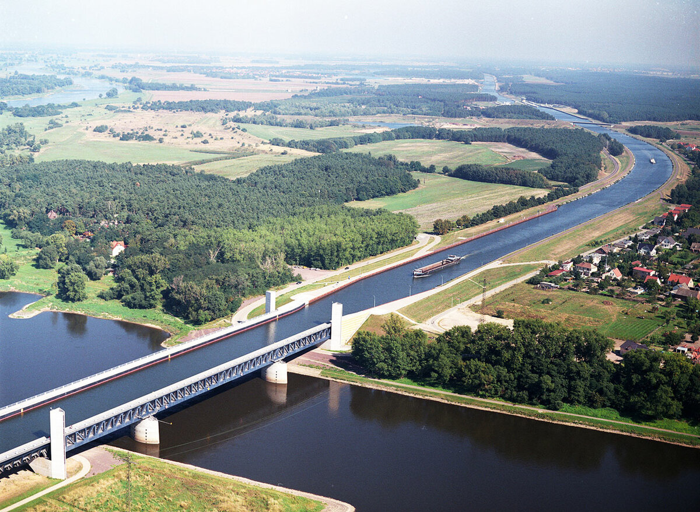
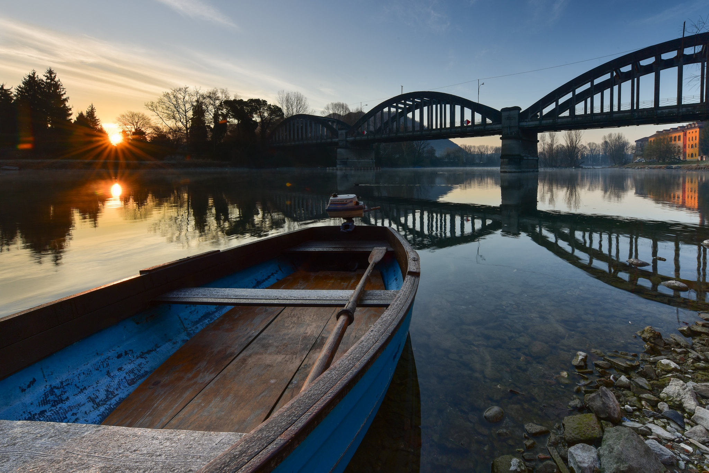

🦾 Our future
Several millennia ago, speed, endurance and strength were among the main factors of "success", it depended on them whether you would have food and shelter. Quick feet were replaced by flexibility of mind and knowledge. However, it is not the availability of food that depends on them to a greater extent, because today obesity, not hunger, is the problem of modern man, but access to the desired benefits and comfort. But today, when they talk about success, they talk about a person of the future living right now. This man is ready to make the whole country successful! After we elect him to the presidency, our life will change for the better. In the photo we can see this superman, already today he says that he will make us look like him in 5 years if we go to meet him!

As you can see, he has developed the size of his skull to an unprecedented size, just imagine what kind of brain can be inside there! This is exactly the person who will lead us into a bright future. Right at the moment, he is developing a plan to improve life in our country. He is concerned about the ecology of the world, because he understands that you and I can live for more than 1000 years! A plan has already been prepared to improve the structure of communication in the country, and economic and military-strategic plans are also being prepared. His works describe how we can become the leading super duper mega power in 150 years and reach the universal level of development.
Today he is outraged by the location of the capital and the amount of pollution in it. A pile of asphalt that raises the temperature in the city, and millions of cars that also negatively affect the ecology of the entire planet. He notices that residents of the capital reduce their lives by more than 30%. First of all, he will move the capital to the city that will become the first city of the future - Rybinsk.
The man wants to justify his surname - 'Novozhilov' and breathe new life into this city. By today's standards, the city is well developed, but by the standards of the future, it does not pass the test for the kennel of a wild dog
The city of Rybinsk has potential in the field of tourism. In Demino, a suburb of the city, there is a stage of the World Cup in cross-country skiing. The Merchant's Day, the Festival of Poetry and Songs in memory of Lev Oshanin, numerous exhibitions and fairs are held in the city. The city actively accepts bus groups, cruise liners, walking sightseeing tours are conducted in Rybinsk. Of great value and interest is the historical center of the city with buildings of the XVIII — early XX centuries.
All these buses and tourists spoil the ecology of the city, so it was decided to get rid of them. Well, not from people, but from buses, otherwise who will vote for a genius lol? There are already natural reservoirs in the city, which plays into the hands of the future tsar. Also, the city will grow in width - high buildings with human bedbugs are not needed. Fortunately, the country allows you to build in breadth, and if there is not enough space, then he will capture all the unwanted states.
Now briefly about the improvement of transport throughout the country. It is planned to destroy all roads and make rivers in their place. You will say - brilliant! And you will be right - every word of his is a piece of genius, and he himself emits a divine light when he thinks that he is a sunny boy ☀️ . In addition to the fact that it will improve the environment by 100500 times, it will completely eliminate unemployment, improve the overall health of the nation and make you super jocks, because the transport of the future will directly affect this.
 The advantages of water transport in our country are that by water transport it is possible to transport large and small shipments of goods and people to points where there is no road or rail transport, it is possible to travel with excellent conditions. People wish each other good health when they meet, because it is the basis of a full and happy life. Good health contributes to the fulfillment of our plans, overcoming difficulties, gives us the opportunity to solve life problems and ensures a long and active life. Our genius does everything to keep you healthy even without rocking chairs and latex underpantsIt is planned to open more than 100 colleges for boaters in Rybinsk, open more than 30 woodworking enterprises and more than 12 boat manufacturing enterprises. He understands that we are a resource-rich country and intends to use all resources for the benefit of the future. An institute for the study of the dynamics of boats and their patency in different types will also be opened, which will provide our country with the most progressive boats.
As other geniuses of this country may have already guessed - the transport of the future is boats, and again you admired the genius, not everyone is able to understand that cars are not suitable for traveling along rivers, if you don't understand this - just believe me, more than 550 experiments were conducted to prove this fact. In the boats of the future, it is planned to abandon various motors, including electric ones - because their production is not environmentally friendly. It is clear that the boats will have a large model version, but the configuration will differ in the number of seats of the oars and sometimes the presence of pedals - which is a brilliant and unique work of the mega brain of our genius!
Yes, in the economic projects that he is currently working on, of course, we will abandon all non-ecological production and most likely force the whole world to also abandon environmental pollution. But so far he has not spoken details to a wide audience. But just imagine living in a green, clean world, in the most progressive and powerful country. Without the Internet and the car, there will probably be its own eco-friendly counterpart, for example, boats of the future or pigeon mail. All you need to do is tell everyone you know about this brilliant man and vote for him in the upcoming elections!Go ahead - the future is in your hands and his head!